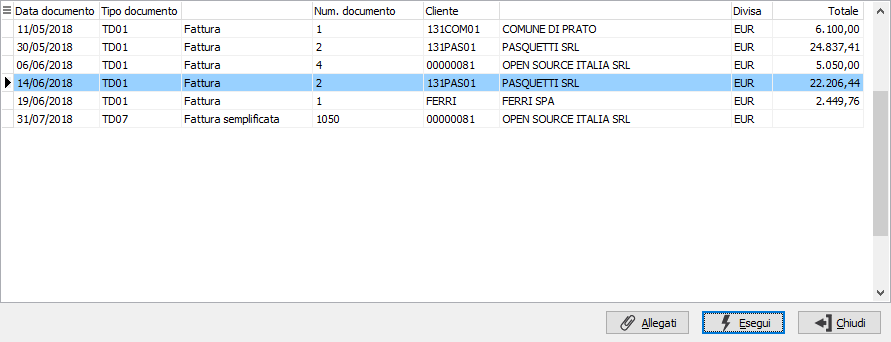

Acquisizione fatture di
vendita da Box (prima nota contabile)
 è
stata introdotta la possibilità di acquisire i valori del documento di
vendita presente sul BoxFatture vendite direttamente in prima nota contabile
quando si registra un movimento di fattura di vendita tramite l'apposito
pulsante. Si apre la finestra di selezione che mostra i documenti ancora
da importare in prima nota.
è
stata introdotta la possibilità di acquisire i valori del documento di
vendita presente sul BoxFatture vendite direttamente in prima nota contabile
quando si registra un movimento di fattura di vendita tramite l'apposito
pulsante. Si apre la finestra di selezione che mostra i documenti ancora
da importare in prima nota.

Nell’elenco vengono visualizzati tutti i documenti non ancora importati
per cliente/numero/data documento, se indicati nella maschera di prima
nota contabile o nei dati di testa della fattura,
se tali dati non sono stati indicati, vengono visualizzati tutti i documenti
da importare. Tramite il bottone è possibile visualizzare l’allegato
della fattura se importato dal file XML, sarà possibile visualizzare gli
allegati anche dopo aver selezionato la fattura tramite il bottone presente
nella sezione Iva del movimento contabile.
 Tramite il bottone Allegati
è possibile visualizzare l’allegato o gli allegati della fattura se importato
dal file XML, altrimenti il bottone risulta disattivato; sarà possibile
visualizzare gli allegati anche dopo aver selezionato la fattura tramite
il bottone
Tramite il bottone Allegati
è possibile visualizzare l’allegato o gli allegati della fattura se importato
dal file XML, altrimenti il bottone risulta disattivato; sarà possibile
visualizzare gli allegati anche dopo aver selezionato la fattura tramite
il bottone  presente nei Dati generali del documento
e nella sezione Iva del movimento contabile.
presente nei Dati generali del documento
e nella sezione Iva del movimento contabile.
In prima nota contabile confermando
l’acquisizione del documento vengono importati i dati della fattura, nel
caso in cui per questo documento sia stata effettuata, oltre l'acquisizione,
anche la fase di preparazione vengono importati tali dati, sia Iva che
contabili, senza nessuna rielaborazione dei dati. Nel caso in cui la fattura
sia stata solo acquisita da OS1BoxFatture Vendite, vengono proposte le
aliquote Iva e i conti contabili con lo stesso criterio indicato nella
fase di preparazione sulla scheda operativa di OS1BoxFatture Vendite.
Una volta importata la fattura in prima
nota contabile non sarà più presente nell’elenco delle fatture da importare.
Se per il documento importato sono
presenti allegati ed è gestita l’archiviazione con OS1FileStore, gli allegati
verranno archiviati e collegati al movimento al momento del salvataggio
definitivo.